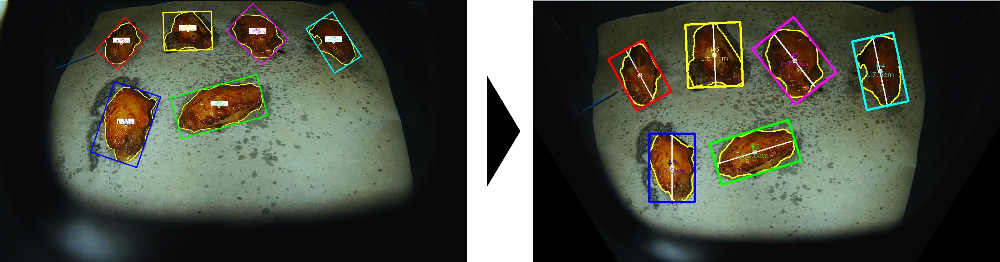
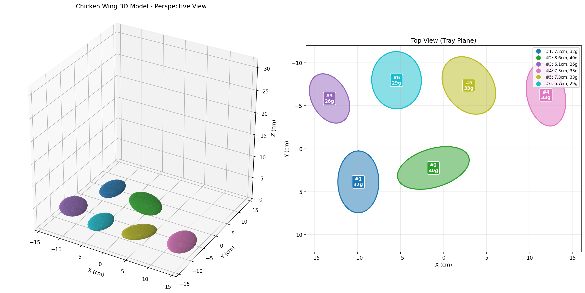

Object Intelligent Measurement System
Product Introduction
The Object Intelligent Measurement System is a core functional module for smart ovens, designed specifically for home kitchen scenarios. Through the built-in camera, the system automatically captures images and completes object dimension measurement and weight estimation.
Core Advantages:
Non-contact measurement, no extra operation required, ready to identify when placed
Fast response, measurement results are immediately fed back to the oven control system
Weight estimation error < 5%, meeting home cooking precision requirements
Key Features
Perspective Distortion Correction
When the camera shoots at a tilted angle, the image produces perspective distortion - objects closer appear larger, objects farther appear smaller. The system automatically corrects this distortion to ensure accurate and reliable measurement results.
{kind=link}

Figure 1 Automatic object contour recognition and perspective distortion correction
Automatic Dimension Measurement
The system automatically identifies object contours, extracts the minimum bounding rectangle, and obtains major and minor axis dimensions, providing basic data for subsequent volume estimation and weight calculation.
Intelligent Weight Estimation
Using an ellipsoid volume model, the system automatically calculates object volume based on measured dimensions, and estimates weight combined with density parameters. Reliable weight data can be obtained without individual weighing.
{kind=link}

Figure 2 Volume reconstruction based on ellipsoid model
Data Output Interface
The system provides a concise data output interface for embedded platforms. After measurement completion, structured data is directly output, facilitating calls from the smart oven main control system:
Parameter |
Type |
Description |
|---|---|---|
volume_cm3 |
float |
Estimated volume (cubic centimeters) |
weight_g |
float |
Estimated weight (grams) |
major_axis_cm |
float |
Major axis length (centimeters) |
minor_axis_cm |
float |
Minor axis length (centimeters) |
confidence |
float |
Measurement confidence (0.0-1.0) |
Interface Features:
Lightweight data structure, suitable for embedded environments
Single call latency < 25ms
Supports batch measurement mode
Provides measurement confidence evaluation